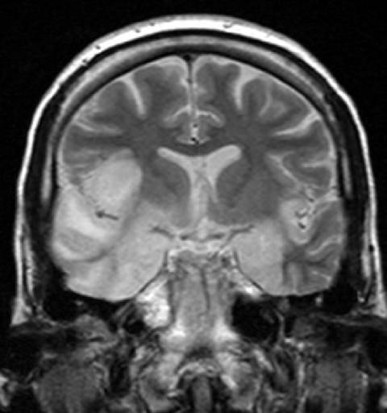

Provocada × não provocada: a meningite dual
Muitos fecham “meningite = epiléptico” ou “meningite = só provocada” sem olhar o tempo. Os dois erros cabem na mesma palavra.
A palavra “meningite” sozinha não fecha o critério. O tempo e o que está acontecendo decidem.
1. No critério de epilepsia, a crise precisa ser não provocada
Crise provocada: causada por qualquer alteração de homeostase aguda presente e capaz de afetar o funcionamento neuronal. Em vigência de causa aguda capaz de fazer crise em qualquer pessoa → não conta como critério de epilepsia.
2. Hiponatremia e hipoglicemia
Hiponatremia clássica: sódio de 140 cai para 105 em poucos dias. A célula que mais sofre com a variação do sódio é o neurônio. Pode haver crise sem o cérebro ser “epiléptico” — cérebro estruturalmente normal; a homeostase desmontou o neurônio.
Hipoglicemia: cai a glicose, desencadeia crise; repor glicose, a crise cede. Não há, por si só, lesão cerebral, alteração genética ou detonador estrutural — foi metabólico.
3. Meningite dual
Meningite / meningoencefalite em fase aguda: a inflamação irrita o córtex e desencadeia crise. Em vigência de inflamação aguda no neurônio, não se chama de epiléptico: é crise provocada.
Pegadinha: a mesma meningite pode deixar sequela cerebral que vira foco epileptogênico e o paciente se torna epiléptico depois.
4. Ler o tempo, não só o rótulo
Na prova e no leito, a palavra “meningite” sozinha não fecha provocada vs não provocada — depende do tempo e do que está acontecendo (agudo inflamado × cicatriz residual). A banca pode trocar a roupagem dos termos “provocada” e “não provocada”: leia o contexto clínico, não só o rótulo.
Guardar o par: agudo homeostático/inflamatório = provocada · sequela/foco residual = caminho para epilepsia.


Quiz · P4 2 perguntas · resposta com feedback
Q1. Crise em meningite aguda em curso, sem sequela documentada:
Q2. Paciente com sequela cicatricial pós-meningoencefalite e nova crise sem fator agudo: